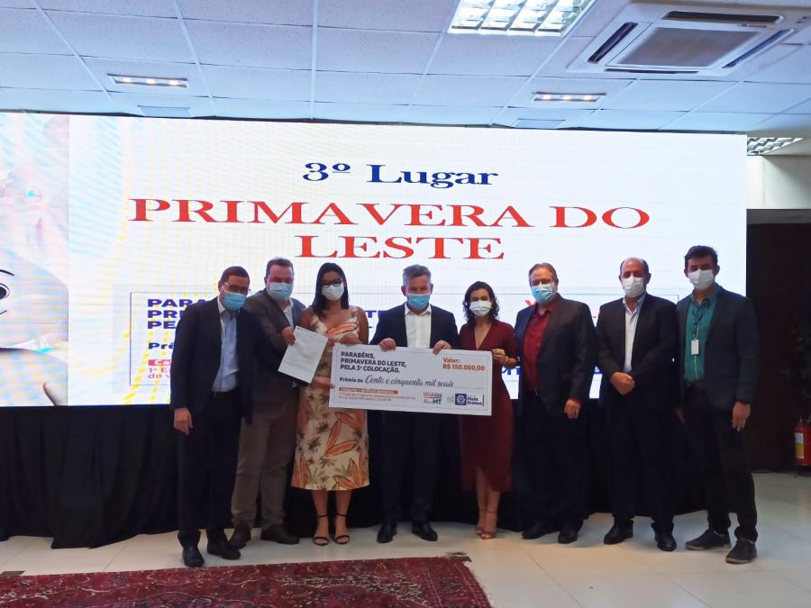
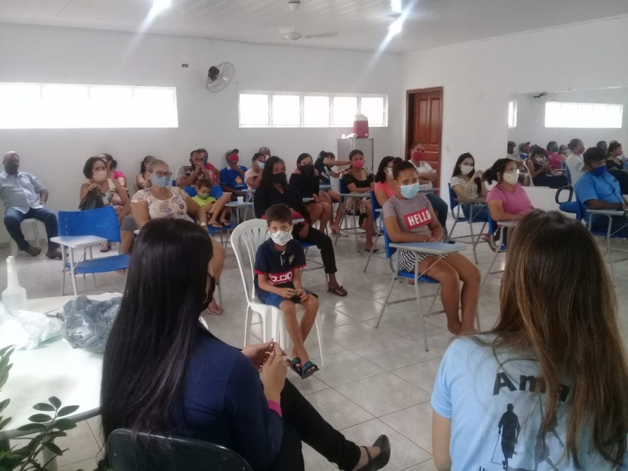
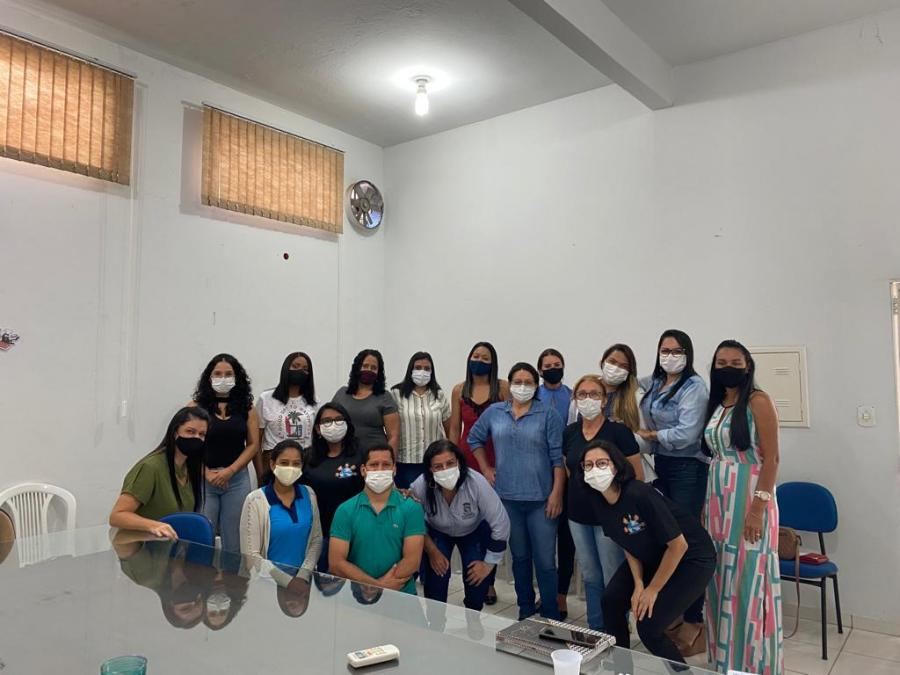
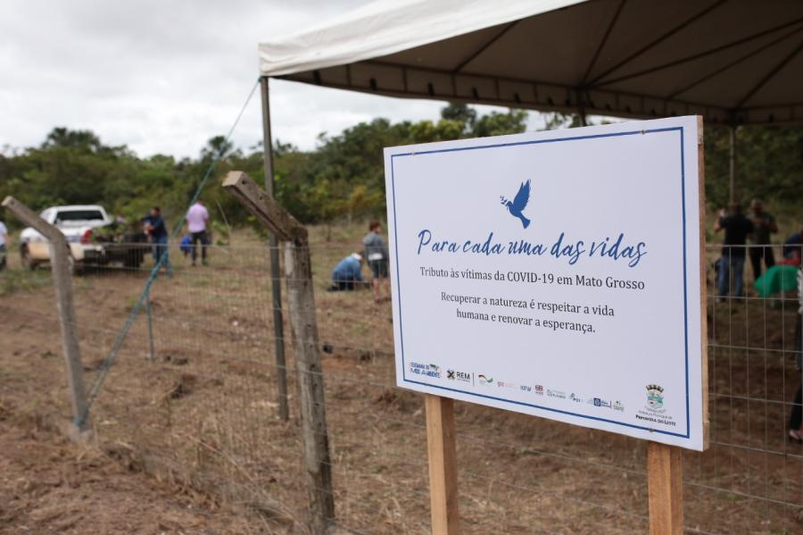
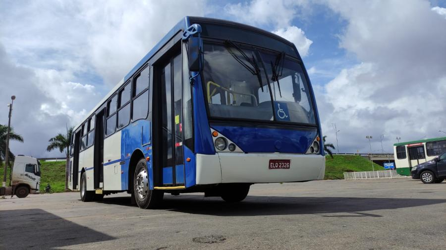
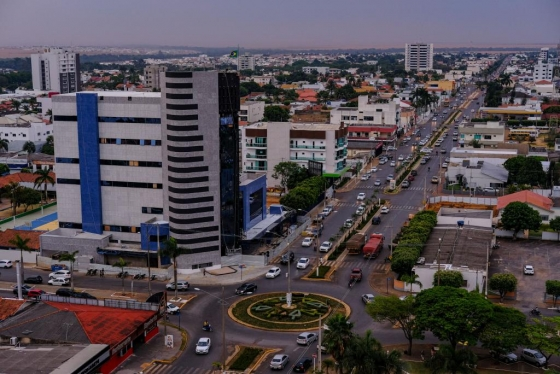
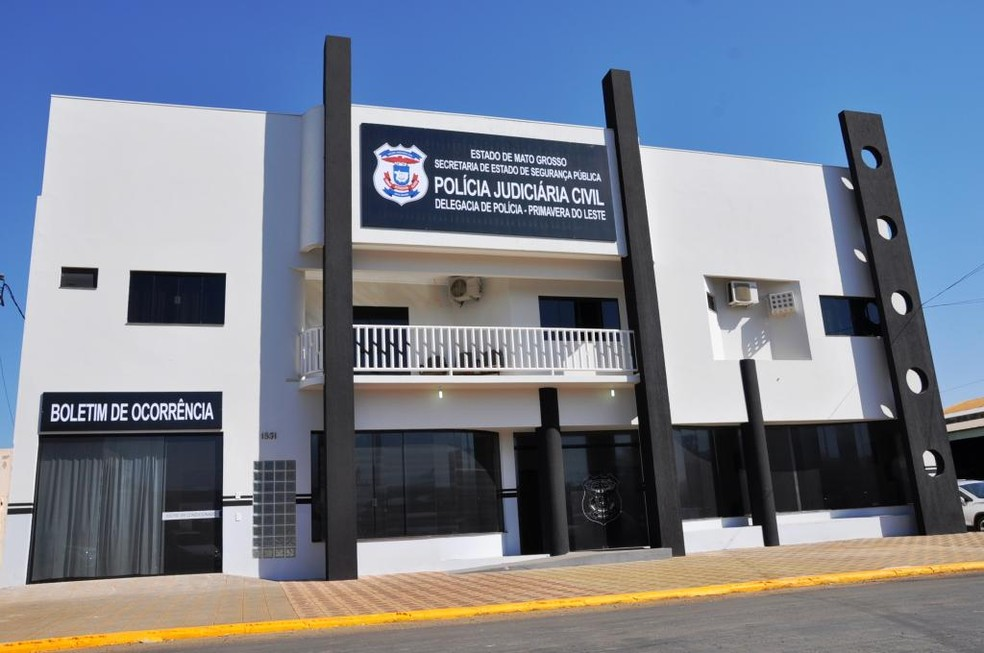
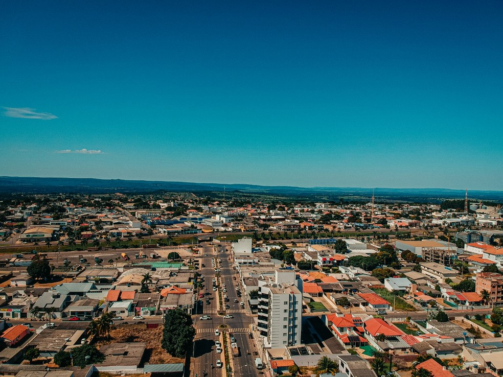

Notícias Cidade
MULHER DESAPARECIDA
Família procura mulher desaparecida no bairro Jardim Riva

Mulher desapareceu por volta das 21:00h do dia 26 de novembro, e não retornou mais.
Leia mais!Desempenho de vacinação
Desempenho em vacinação garante a Primavera do Leste prêmio do Imuniza Mais MT
Programa do Governo do Estado entregou prêmio no valor de R$ 150 mil para ampliação da imunização do município..
Leia mais!Assistência Social
SECRETARIA DE ASSISTÊNCIA SOCIAL DESENVOLVE ATIVIDADES COM MORADORES DO RESIDENCIAL VIDA NOVA
Nutrição saudável, meio ambiente e agricultura familiar foram alguns dos assuntos tratados com a população..
Leia mais!LICENCIAMENTO AMBIENTAL
SERVIDORES PARTICIPAM DE CAPACITAÇÃO SOBRE LICENCIAMENTO AMBIENTAL DESCENTRALIZADO

Servidores da Agricultura e Meio Ambiente participaram da capacitação licenciamento ambiental.
Leia mais!VAGAS PARA CONSELHO TUTELAR
Número de campanha das candidatas para as 10 vagas do conselho tutelar.
Número de campanha das candidatas para as 10 vagas do conselho tutelar é alterado no TRE-MT
Leia mais!400 MUDAS DE ESPÉCIES NATIVAS PLANTADAS
Mudas de espécies nativas são plantadas para relembrar as vítimas da pandemia
400 mudas de espécies nativas são plantadas para relembrar as vítimas da pandemia em Primavera do Leste
Leia mais!TRANSPORTE PÚBLICO
PREFEITURA DE PRIMAVERA DO LESTE GARANTE TRANSPORTE PÚBLICO GRATUITO À POPULAÇÃO
O transporte público em Primavera do Leste será gratuito para toda a população a partir da próxima segunda-feira (22).
Leia mais!30 MILHÕES INJETADOS!
MAIS DE 30 MILHÕES SERÃO INJETADOS NA ECONOMIA DE PRIMAVERA COM PAGAMENTO DE SERVIDORES MUNICIPAIS NESTE FIM DE ANO
 Cerca de R$ 30 milhões devem ser injetados na economia de Primavera do Leste neste fim de 2021... Leia mais!AGRONEGÓCIO
Nova usina de etanol de milho anuncia instalação em Primavera do Leste..
Nova usina de etanol de milho anuncia instalação em Primavera do Leste e com investimento de 2,3 bilhões de reais... Leia mais!ZONA DE EXPORTAÇÃO
ZONA DE PROCESSAMENTO DE EXPORTAÇÃO DEVE SER INSTALADA EM PRIMAVERA DO LESTE
Zona de Processamento de Exportação poderá ser instalada em Primavera do Leste..
Leia mais!PONTE DO RIO CAFÉ
PREFEITURA DE PRIMAVERA DO LESTE INAUGURA NOVA PONTE DO RIO CAFÉ AGORA EM NOVEMBRO

Prefeitura inaugura nova ponte do Rio Café agora em novembro, na região de Mantiqueira...
Leia mais!TEDY MOREIRA MORRE AOS 30 ANOS
ALUNO DE ENGENHARIA MORRE AOS 30 ANOS APÓS CHOQUE DURANTE O TRABALHO EM MT
.jpg) Aluno de engenharia morre aos 30 anos após choque durante o trabalho em MT..
Leia mais!
Aluno de engenharia morre aos 30 anos após choque durante o trabalho em MT..
Leia mais!
ENTREVISTA COM ALLAN VICTOR
POLÍCIA INDICIA SUSPEITO DE MATAR MORADOR DE RUA A PAULADAS EM PRIMAVERA DO LESTE (MT)
Polícia indicia suspeito de matar morador de rua a pauladas em Primavera do Leste (MT)..
Leia mais!PRIMAVERA CONECTADA
PRIMAVERA CONECTADA ESTÁ ENTRE AS 100 MAIS CONECTADAS DO PAÍS EM 2021
Primavera e Cuiabá são as únicas que aparecem na lista dos 100 municípios brasileiros mais inteligentes e mais conectados..
Leia mais!Notícias recentes
-
Transporte público
Prefeitura garante transporte público gratuito...
-
Ponte do Rio Café
Prefeitura de Primavera do Leste inaugura nova Ponte do Rio Café novembro...
-
30 milhões injetados!
Na economia de com pagamento de servidores municipais..
-
Primavera conectada
Está entre as 100 mais conectadas do país em 2021...